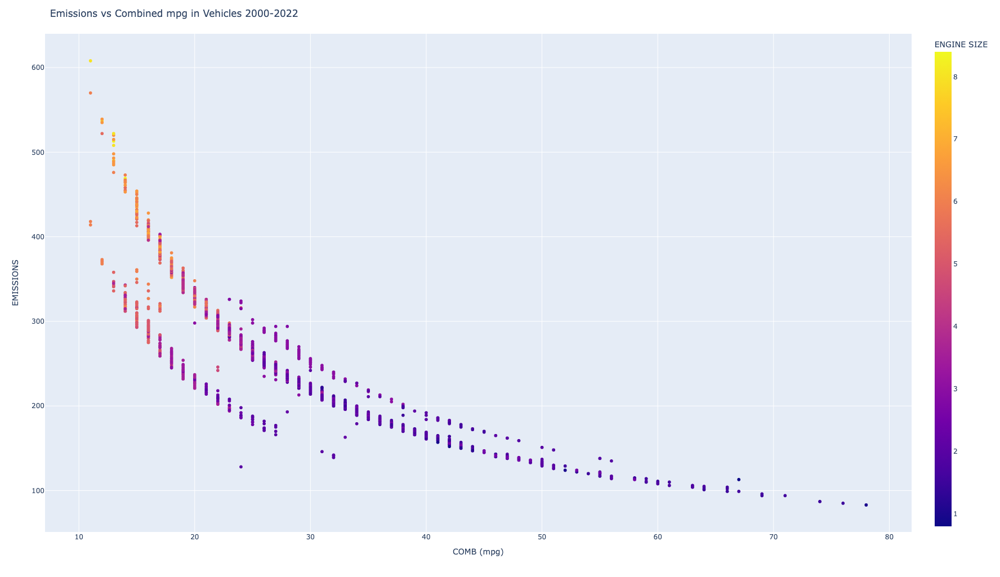

Marks
- Area
Channels
- Color (Color Hue)
- Represents a categorical attribute type showing the political party that has won in the state. Red being republican voting for Trump and blue being democratic voting for Clinton. When it is multicolored, like Nebraska, it means the electoral votes were split.
- This is a good choice as it can specifically show which party has won and where.
- Position (both horizontal and vertical)
- Represents a categorical attribute type showing the positions of all the states on the map. This is helpful to show regions of states that vote similarly on the map.
- This is a good choice as it clearly shows the user where the states are in the US to see the differences.
Colormap(s)
- Categorical
- Represents a categorical attribute of two different sides between red and blue or Trump vs Clinton.
- This is a good choice as it clearly shows the two different parties in the election. The colors are the same as what the parties national colors are. And the colors are different enough to clearly see when they are different.

Marks
- Points
Channels
- Position (both horizontal and verticle)
- Represents an ordered attribute type showing a baseball's launch angle and exit velocity.This determines where the ball goes and if it ended up being a ground ball, line drive, home run, fly ball, or pop-up.
- This is a good choice as it shows both attributes of angle and speed for each ball and where it falls on the scale of being from a ground ball to a pop-up.
- Color (Hue)
- Represents a categorical attribute of Below or above the average LWTS on the scoring value meter. This is represented through Purple or Orange
- This is a good choice to split the colors up to show the best types of hits on the baseball. It is easy to see That the homeruns are in Orange while the ground balls or pop ups are in purple.
- Color (Saturation)
- Represents an ordinal attribute of the value around the scoring value meter. Showing how much below, how close to the average, or how much above each hit is.
- This is a good choice to show as you are able to see the divides leading up to the different scoring values. So the purple and orange points become lighter as the become closer to eachother. But in their most prevelant areas like in the home runs or pop-ups, the colors are much darker.
Colormap(s)
- Divergent colormap
- Represents an ordered attribute type of different scoring values of the LWTS.
- This is a good choice as it can show clearly if a batted ball is below average, average, or above average by showing purple, white, or orange. And it can also contain the shades of these to show the levels and how close or far apart each datapoint is from eachother on the scoring value.

Marks
- Points
Channels
- Position (both horizontal and verticle)
- Represents a ordered attribute type showing emissions levels and combined miles per gallon. The horizontal position represents combined mpg, and the vertical position represents emissions levels.
- This is a good choice because position on a common scale is high on the effectiveness level. The axes help to make it easy to judge where the points are on the scale.
- Color (Saturation)
- Represents an ordered attribute of engine size of the vehicle.
- This is an okay choice because color saturation isn't very high on the effectiveness level, and the specific saturation of the colors is not very easy to see on the visualization.
Colormap(s)
- Sequential colormap
- Represents a quantitative attribute type of engine size.
- This is a good choice because the difference between the high end of the engine sizes and the low end is easy to see. However, the only thing that could be changed is having the darker color correspond to a greater engine size as we often think of darker as more.